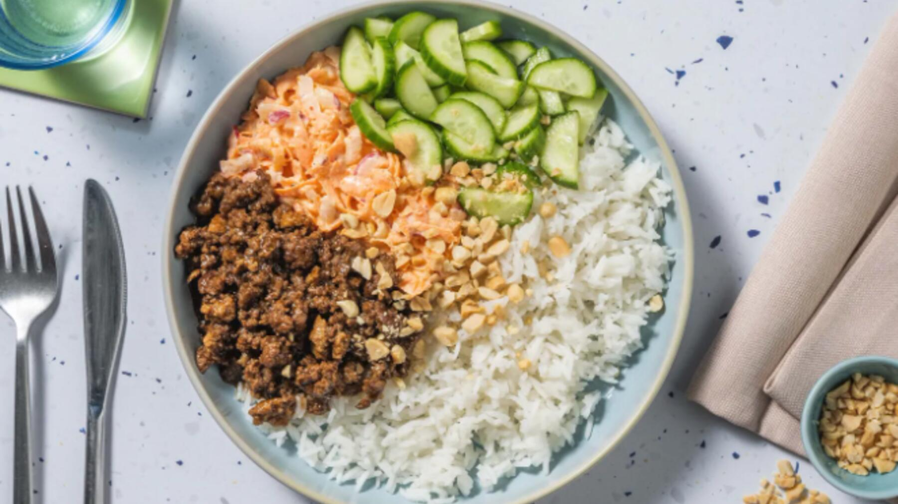

Zurück zur Übersicht
Vietnamesische Hoisin-Rinderhack-Bowl
Rinderhack in Hoisinsoße auf Reis, mit scharfem Karotten-Radieschen-Coleslaw, gepickelten Gurken und Erdnüssen.
- Zeit
- 40 Min.
- Schwierigkeit
- leicht
- Kategorie
- Asiatisch
- Ernährung
- mit Fleisch
Zutaten
Portionen
- 200 gRinderhackfleisch
- 150 gBasmatireis
- 25 mlHoisinsoße
- 1kleine Salatgurke
- 100 gRadieschen
- 2Karotten
- 8 mlSriracha-Sauce
- 20 gErdnüsse, gesalzen
- 50 gMayonnaise
- 2 ELWeißweinessig
- Salz, Zucker, Pfeffer, Öl
Zubereitung
- 300 ml Wasser im Wasserkocher erhitzen, in einen kleinen Topf füllen, salzen und aufkochen. Den Reis einrühren und abgedeckt bei niedriger bis mittlerer Hitze 10 Minuten leicht köcheln lassen. Dann vom Herd nehmen und abgedeckt mindestens 10 Minuten ziehen lassen.
- Die Karotten nach Belieben schälen und grob raspeln, die Radieschen ebenfalls grob raspeln. Die Erdnüsse hacken.
- Die Gurke längs halbieren und in 0,5 cm dicke Halbmonde schneiden. In einer großen Schüssel mit 1 TL Salz, ½ TL Zucker und dem Weißweinessig würzen.
- In einer zweiten großen Schüssel Mayonnaise und Sriracha verrühren. Radieschen und Karotten dazugeben, gut vermengen, mit Salz, Zucker und Pfeffer abschmecken und beiseitestellen.
- Das Hackfleisch in einer großen Pfanne in etwas Öl 3–4 Minuten scharf anbraten und dabei zerkrümeln. Die Hitze etwas reduzieren, mit Hoisinsoße und 50 ml Wasser ablöschen und 2–3 Minuten köcheln lassen, bis die Masse eingedickt ist. Mit Salz, Pfeffer und einer Prise Zucker abschmecken.
- Den Reis mit einer Gabel auflockern und auf Teller verteilen. Hackfleisch, Coleslaw und Gurken daneben anrichten und mit den Erdnüssen bestreuen.
Mengen: Für 4 Portionen: 400 g Rinderhack, 300 g Reis (600 ml Wasser), 50 ml Hoisinsoße, 2 Gurken, 200 g Radieschen, 4 Karotten, 16 ml Sriracha, 40 g Erdnüsse, 100 g Mayonnaise und 100 ml Wasser zum Ablöschen.